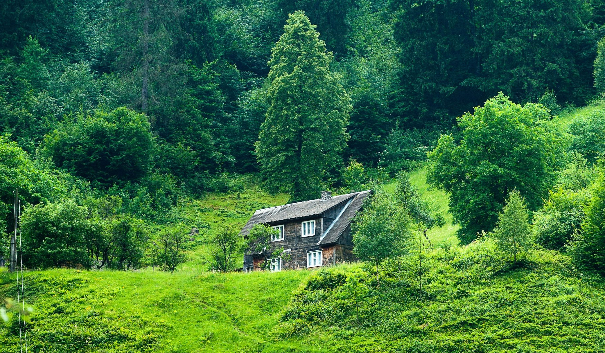

Nature is made of everything we see around us- trees, flowers, plants, animals, sky, mountains, forests and more. Human beings depend on nature to stay alive. Nature helps us breathe, gives us food, water, shelter, medicines and clothes. Nature also has emotions. But human's dont understand it. With the burden of a growing population, nature is degrading its quality. Nature is important for all of us. It is the reason why life is there on earth. There are various species in nature. nature created a balance for animals, microbes, cora; reefs, and other living organisms. There is a specific branch in science for studying the natural environment.
Nature is the reason behind all lives dwelling on the earth. It is the blessing of invisible power for all living and aboitic factors of the environment. The natural environment which is in the physical form is called nature. nature is also called a human attribute in behavioral terminology. It has encountered various changes for the development of an entity of a mankind. Nature is nurturing all living organisms for years. The beauty of nature is matchless. Nature has placed everything useful, with order and purpose in our life.
The Nature is an important part and parcel of our environment. In fact, the nature adds menaing and life to this planet earth. The nature is the treasure house of every important element that ustains life on this mother earth. Nature is everything around us. It provides the beauty of our environment. Without the amazing gifts of nature the human life would have dull and meaningless. Nature is one of the best, precious and noblest gift of god on this planet. The nature has beautiful varities on this planet. There are thousands of creatures living on this planet. They all are serving a defined purpose on this planet.e